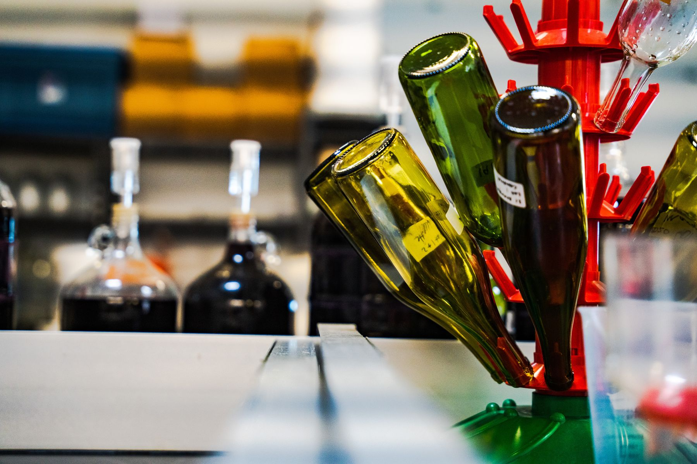
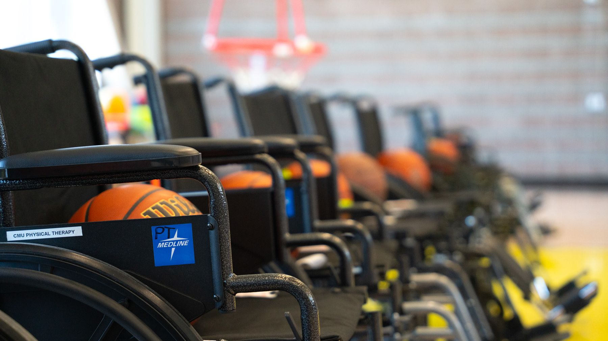
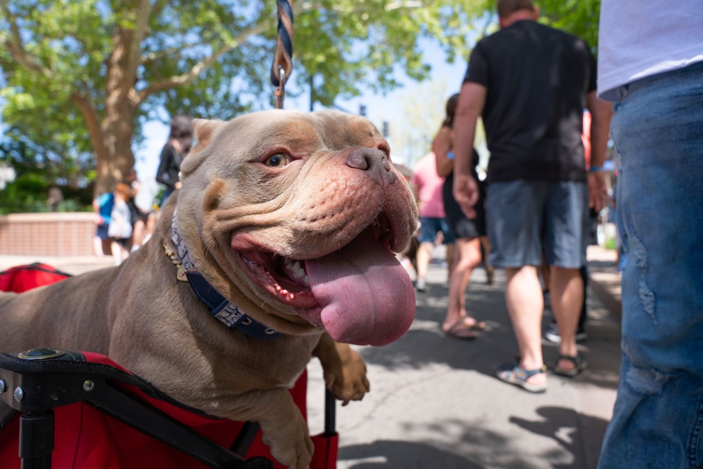

Viticulture
Short description of the viticulture project — where it was shot, who it was for, and what it captures.
View the viticulture gallery →Portfolio

Short description of the viticulture project — where it was shot, who it was for, and what it captures.
View the viticulture gallery →
Short description of the adaptive event coverage — the event, the athletes, and the story behind the photos.
View the adaptive event photos gallery →
A collection of photojournalism and documentary work from assorted assignments and stories.
View the miscellaneous gallery →